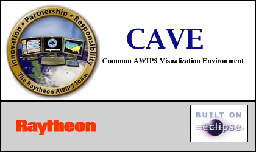

GFE Startup Information
February 16, 2012
Table of Contents
Command Line Options
Standard Startup of GFE
Special Configuration Files
Special GFE Startup Modes for TEST and PRACTICE
Command Line Options
cave.sh [-server hostname:port/services] [-mode TEST|PRACTICE|OPERATIONAL] [-site xxx]
[-u user] [-component componentName] [-perspective perspecitiveName] [-noredirect]
[-consoleLog] [-nc TRUE]
| Command Line Option |
Optional? |
Meaning |
| -server hostname:port/services |
YES |
Overrides the hostname and port settings in the localization preferences. |
| -mode TEST|PRACTICE|OPERATIONAL |
YES |
Causes CAVE to be started in the specified mode. OPERATIONAL by default. |
| -site xxx |
YES |
Overrides the localization site preference setting forcing CAVE to start as the specified site.
|
| -u user |
YES |
Overrides the user workstation login with the specified user id. Note: SITE is NOT a user id in AWIPS2.
|
| -component componentName |
YES |
Used to start specialized CAVE sessions like textWS, avnMenu, ServiceBackup, etc. |
| -perspective perspecitiveName |
YES |
Causes CAVE to start in the specified perspective, i.e, GFE, D2D, etc. No perspective
buttons will be displayed. You must use the CAVE->Perspective menu to change perspectives. |
| -noredirect |
YES |
Causes stdout and stderr to not be redirected but instead display in the terminal window
for debugging use. |
| -consoleLog |
YES |
Causes the CAVE log to be output to the console for monitoring/debugging.
|
| -nc |
YES |
This option is only used by Service backup. It is used to indicate that the site is
a national center, consequently a non-primary site gets special permission to export
site configuration to the central server via the Service Backup GUI. This option should
be set to 'true', i.e., -nc true.
|
Standard Startup of GFE
GFE is normally started with the appLauncher menu activated by
clicking anywhere on an AWIPS workstation desktop.

To start GFE
via the command line execute the /awips2/cave/cave.sh script with the
switch -component GFE.
When this is done, the GFE begins and contacts EDEX. If EDEX cannot
be contacted successfully, an error dialog is presented to the user.
In normal situations once the server has been contacted, the user is
presented with the GFE start up dialog.
GFE will query EDEX and determine
the available list of configuration files that are available to the
user.
The standard "gfeConfig" is shipped with the system. The site may
have overridden it and users may override them too. See the base,
site, user concepts guide for information. The gfe
configuration
file can be tailored to the site's or user's needs. See the gfe
configuration guide for details. The user selects the appropriate
configuration file from the
list.
The user is not allowed to enter a new configuration file since gfe
requires an existing configuration file to start.

The user positions the cursor over the Ok button and
clicks.
GFE will now start and just the splash screen will be shown:

If the GFE does not come up properly, a
bad configuration file is likely the cause.
Special Configuration Files
GFE comes with some special
configuration files which can be used to modify special grids. If a GFE
is started using one of these files, then various special
weather elements can be edited.
EditTopo
Starting the GFE with this config file allows for the editing of the topo grid. You can
use the standard startup, and enter EditTopo into the configuration
entry field of the startup dialog.
Once the GFE is running, there will be no weather elements appearing
in the grid manager. One weather element will be loaded, of a persistent
nature, into the spatial editor. This element is called Topo SFC
Topo_EditTopo. You can edit the topography and once saved, the remainder
of the GFESuite system will see the modified topography when those
programs are started.
Special GFE Startup Modes for Test and
Practice
The GFE may be started with three special modes. These modes
allow for product testing and GFE practice. This section defines
the behavior of the GFE in these modes.
TEST mode
Starting the GFE with a -mode TEST
switch will place the GFE in TEST mode. All products issued in
this mode will be issued with TEST mode enabled. The
forecaster edits a Test database instead of a Fcst
database, thus no impact is made on formal operations.
Test mode on products means that products that normally have VTEC will
have the "T" code enabled, regardless of the definition in the
VTECMessageType file (as long as there is a definition for the product
in the VTECMessageType file). Test products mean that the
MND header will contain the "...TEST..." and so will any headlines in
the product.
The characteristics of the GFE is changed while in TEST mode:
- The forecaster edits a Test database instead of a Fcst
database, thus no impact is made on formal operations.
- Product can be transmitted.
- There is no Official database available.
- Sending of ISC grids and Publishing to Official is disabled.
- The FormatterLauncher data source is set to the Test database.
- The VTEC "active" table is used since these products can be
transmitted.
- The enabled VTEC modes specified in VTECMessageType is used only
to determine if VTEC is enabled or not for a product. If a
product does not normally
contain VTEC, then in TEST mode no VTEC will appear. However, if
vtec is enabled for a product, that vtec mode is switched to "T" mode.
- The background color of the GFE is changed, to make it clear to
the forecaster that they are in a special mode. The word
TEST is placed in the window manager title.
An example of the GFE in TEST mode is shown below:
PRACTICE mode
Starting the GFE with a -mode PRACTICE
switch will place the GFE in PRACTICE mode. In this mode the
following characteristics are changed:
- The forecaster edits a Practice database instead of a Fcst
database, thus no impact is made on formal operations.
- There is no Official database available.
- Sending of ISC grids and Publishing to Official is disabled.
- The FormatterLauncher data source is set to the Practice database.
- An alternate active table is used to ensure there is no conflict
with real operations.
- The ability to store products in the AWIPS text database and
transmit them is not available, although the GUI will still
exist. The Transmit GUI will clearly indicate that the transmit
is being simulated.
- A special Formatting entry appears on the Formatter Launcher to
allow the forecaster to select the type of practice formatting.
Choices range from the 3 operational VTEC modes and no VTEC for
operational/normal wording, and two choices for test wording (with and
without VTEC).
- The background color of the GFE is changed, to make it clear to
the forecaster that they are in a special mode. The word
PRACTICE is placed in the window manager title.
The background of the GFE in Practice mode appears orange: